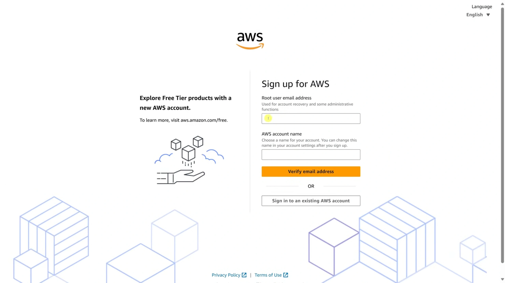

Create Your AWS Account
Learn how to safely set up AWS, secure your root account, and avoid unexpected costs.
Step 1 — Create an AWS Account
Go to the AWS homepage and select Create an AWS Account. Enter your email, choose a strong password, and set your account name.
Step 2 — Secure Your Root Account
Log in using your root email. Then immediately enable:
- MFA (Multi-Factor Authentication)
- Strong unique root password
- Store recovery codes somewhere safe
Step 3 — Set Up Billing Alerts
In the AWS Console, go to: Billing → Budgets → Create Budget.
Create a monthly cost budget (e.g., £5) and enable email alerts. This prevents unwanted charges while learning.
Step 4 — Create Your First IAM User
Never use the root account for daily tasks. Create an IAM user with admin permissions:
- Go to IAM
- Select Users → Create user
- Attach policy: AdministratorAccess
- Enable console access + strong password

Step 5 — Sign In as the IAM User
AWS gives you a special login URL for your IAM users. Bookmark it and use the IAM account from now on — not the root account.